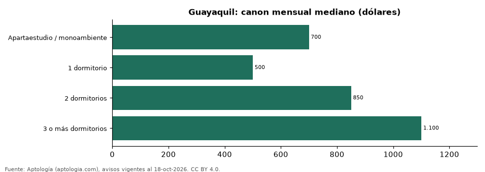

Alquiler en Guayaquil por número de dormitorios: cuánto cuesta cada tipo de departamento (octubre 2026)
Estudio con datos abiertos (CC BY 4.0). Versión original: https://github.com/elbroker/aptologia-datos/tree/main/estudios/alquiler-por-numero-de-dormitorios-guayaquil-2026 · DOI: 10.5281/zenodo.23502304
En Guayaquil, alquilar un departamento de 1 dormitorio cuesta en la mediana USD 500 al mes y uno de 2 dormitorios, USD 850 (+70,0 %). Uno de 3 o más dormitorios se pide en USD 1.100.
Resumen: analizamos 1.408 avisos de departamentos en alquiler en Guayaquil con número de dormitorios declarado.
Actualizado: 18 de octubre de 2026 (datos del 18 de octubre de 2026) · Próxima actualización: mensual.

Resumen
| Indicador | Valor |
|---|---|
| 1 dormitorio | USD 500 |
| 2 dormitorios | USD 850 |
| Salto de 1 a 2 | +70,0 % |
| Avisos | 1.408 |
Canon por número de dormitorios
| Tipo | Canon mensual (mediana) | Rango típico (P25–P75) | Área mediana (m²) | Canon por m² | Avisos |
|---|---|---|---|---|---|
| Apartaestudio / monoambiente | USD 700 | USD 320 – USD 948 | 54 | USD 10,0 | 87 |
| 1 dormitorio | USD 500 | USD 350 – USD 850 | 58 | USD 9,5 | 155 |
| 2 dormitorios | USD 850 | USD 600 – USD 1.200 | 90 | USD 9,1 | 599 |
| 3 o más dormitorios | USD 1.100 | USD 750 – USD 1.675 | 140 | USD 7,6 | 567 |
Medianas del canon mensual pedido, sin administración ni gastos comunes; el rango típico va del percentil 25 al 75.
Preguntas frecuentes
¿Cuánto cuesta alquilar un departamento de 2 dormitorios en Guayaquil? USD 850 al mes en la mediana (octubre de 2026); la mitad central de la oferta está entre USD 600 y USD 1.200.
¿Y uno de 1 dormitorio? USD 500 al mes en la mediana.
Metodología
- Fuente: exportes nocturnos de la base de datos de Aptología (aptologia.com) del 18 de octubre de 2026: avisos vigentes de vivienda en portales inmobiliarios de 13 países, recogidos por Aptología y vistos en línea entre el 11 y el 18 de octubre de 2026. Corte: 18 de octubre de 2026.
- Depuración: se eliminan duplicados exactos (misma ciudad, zona, tipo, precio, moneda, área, habitaciones y baños) y los precios fuera del percentil 1–99 de cada país, operación, moneda y tipo; el precio por m² usa solo avisos con área declarada entre 12 y 2.000 m² y también se recorta al P1–P99.
- Qué se mide: precios pedidos (publicados), no precios de cierre. En arriendo, el canon mensual sin administración, gastos comunes ni condominio.
- Muestra mínima: cada cifra publicada se apoya en al menos 30 avisos; las celdas con menos se omiten.
- Monedas: nunca se mezclan avisos de monedas distintas sin convertirlos. Conversión a dólares con la tasa de mercado de ExchangeRate-API (open.er-api.com, actualización del 18 Oct 2026): 1 USD = 3.182,80 COP, 1 USD = 18,47 M.N, 1 USD = 5,09 BRL, 1 USD = 3,44 PEN, 1 USD = 982,44 CLP, 1 USD = 1.514,57 ARS, 1 USD = 40,20 UYU, 1 USD = 5.705,37 PYG, 1 USD = 61,27 DOP, 1 USD = 0,89 EUR, 1 USD = 11,72 BOB; la UF chilena a 41.178,64 CLP (mindicador,cl. 18-oct-2026). Los avisos publicados en dólares se usan tal cual.
- Monedas: en cada ciudad y operación se usa solo la moneda mayoritaria de los avisos (los avisos en otra moneda se excluyen) y la mediana se convierte a dólares con la tasa citada; nunca se promedian avisos de monedas distintas.
- Limitaciones: la cobertura depende de los portales que recorre Aptología en cada país y es mayor en las ciudades grandes y en los segmentos medio-alto y alto; el área es la que declara el aviso, sin verificar; los nombres de zona vienen de los portales.
- Privacidad: solo se publican agregados; no se publica ningún dato personal, enlace a avisos ni nombre de anunciante.
- Datos abiertos: datos.csv, licencia CC BY 4.0.
Cómo citar
Pinzón Pineda, D. M. (2026). Alquiler en Guayaquil por número de dormitorios: cuánto cuesta cada tipo de departamento (octubre 2026). Aptología (aptologia.com). https://github.com/elbroker/aptologia-datos/tree/main/estudios/alquiler-por-numero-de-dormitorios-guayaquil-2026. Datos: datos.csv, licencia CC BY 4.0.